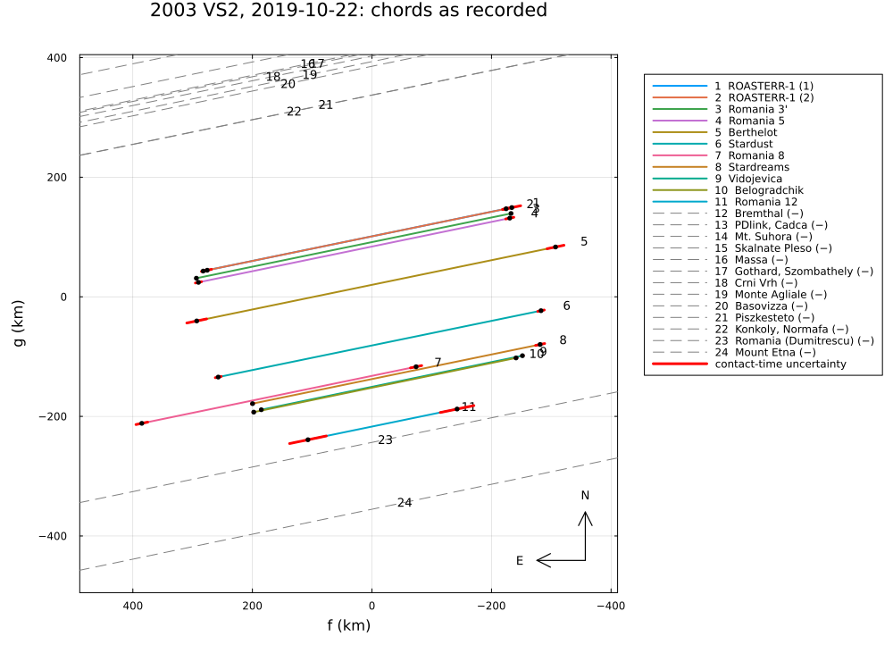
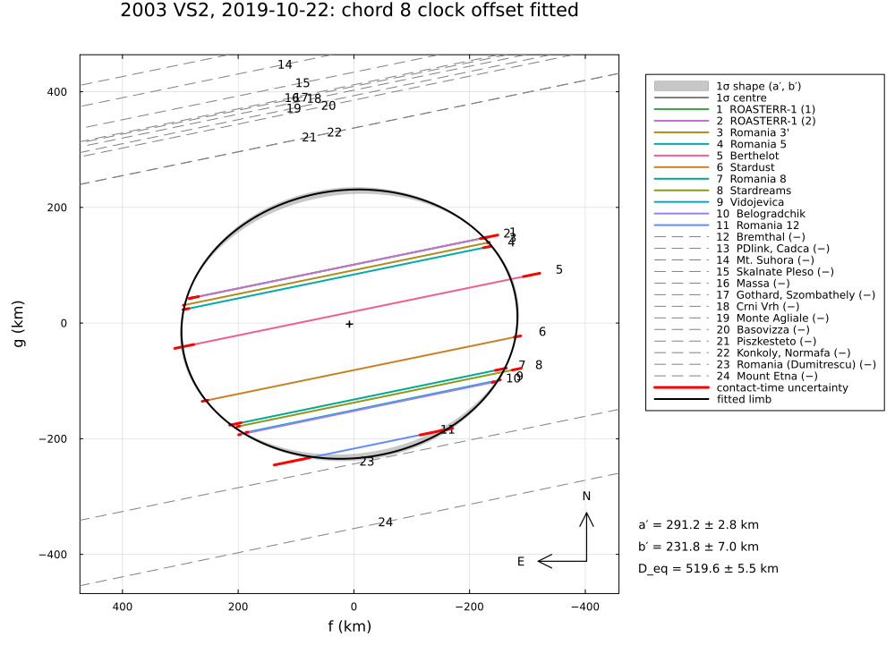
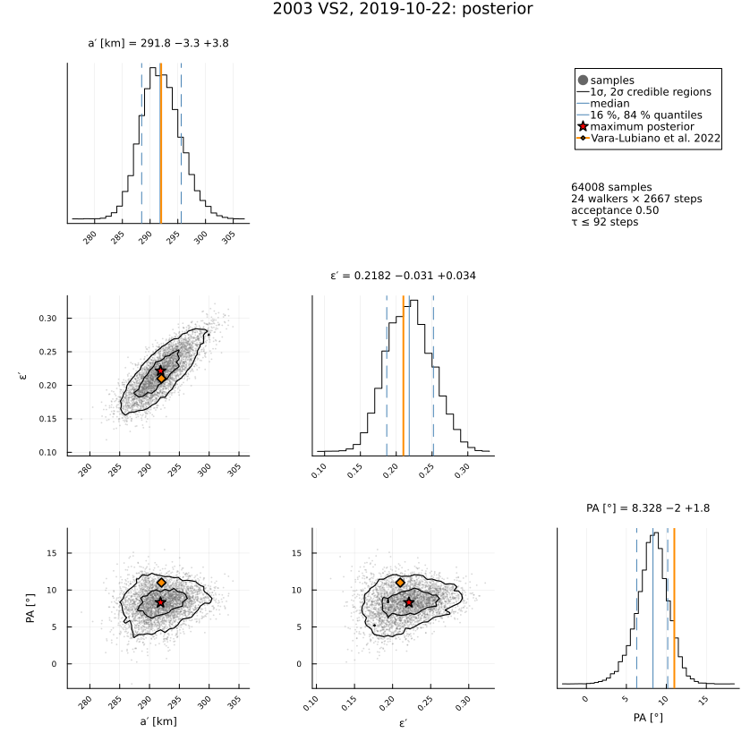
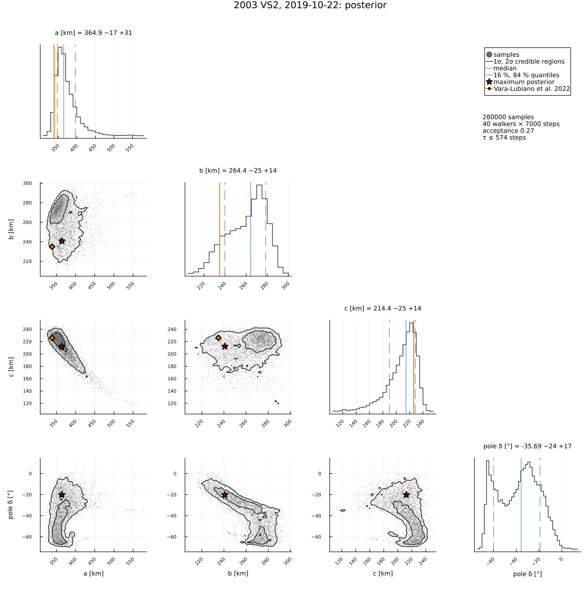
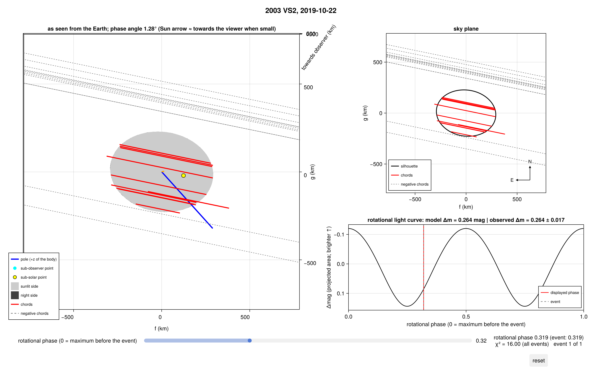

2003 VS2, 2019 October 22
The stellar occultation by the plutino (84922) 2003 VS2 on 2019 October 22, reduced from the published timings of Vara-Lubiano et al. (2022), A&A 663, A121, "The multichord stellar occultation on 2019 October 22 by the trans-Neptunian object (84922) 2003 VS2": eleven positive chords (two telescopes at one site merged into chord 3′) from Romania, Serbia and Bulgaria, and negative chords, at 13 km/s.
The example covers:
- chord 8, whose clock was off by more than a minute: the paper shifts it onto the line of the other chord centres; here its clock offset is a free parameter;
- the paper's two configurations – only chord 8 shifted, and all chord centres aligned – as fits with clock offsets, and the limb allowance σ_limb;
- the negative chords, the posterior, the area-equivalent diameter and the geometric albedo;
- the 3-D ellipsoid from the occultation, the rotational light-curve amplitude (0.264 ± 0.017 mag) and the rotational phase at the event (0.32), with an unknown pole;
- the astrometry.
Two notes on the paper: the tilt angle of Table 6 (the position angle of the minor axis) is counted from north towards the west (−11° there is +11° here, north through east), and the negative chord from Vratnik (H. Mikuž) is listed with the coordinates of the PDlink Observatory and cannot be used.
The data are transcribed in examples/data/2003vs2_20191022.jl, with the stored JPL Horizons ephemeris, so the script runs offline:
julia --project=. examples/2003vs2_2019.jl [output_dir] (default: examples/output/2003vs2_2019)The code is not run when the manual is built. The output after each section is that of the last run of examples/2003vs2_2019.jl, stored in examples/output/2003vs2_2019/output.txt.
using Occultations, Random, Printf, Statistics
using Plots
import CairoMakie # saves the GeoMakie maps (Makie figures)
include(joinpath(@__DIR__, "standard_figures.jl"))
include(joinpath(@__DIR__, "data", "2003vs2_20191022.jl"))
out = length(ARGS) >= 1 ? ARGS[1] : mkpath(joinpath(@__DIR__, "output", "2003vs2_2019"))
rng = MersenneTwister(2019)
P = VS2_PAPER
q(x) = quantile(x, [0.15865525393145707, 0.5, 0.8413447460685429])
pm(x) = (v = q(x); @sprintf("%.1f −%.1f +%.1f", v[2], v[2] - v[1], v[3] - v[2]))
row(label, r) = @printf("%-42s a′ = %5.1f ± %3.1f b′ = %5.1f ± %3.1f PA = %5.1f ± %3.1f D_eq = %5.1f ± %4.1f χ²/dof = %6.2f\n",
label, r[:equatorial_radius]..., r[:semi_minor_axis]..., mod(r[:position_angle][1], 180),
r[:position_angle][2], 2r[:equivalent_radius][1], 2r[:equivalent_radius][2], reduced_chi2(r))
prow(label, x) = @printf("%-42s a′ = %5.1f ± %3.1f b′ = %5.1f ± %3.1f PA = %5.1f ± %3.1f D_eq = %5.1f ± %4.1f\n",
label, x.a..., x.b..., x.position_angle..., x.D_eq...)Event and geometry (paper values in parentheses)
ev = vs2_event()
D = ev.ca.dist_km
@printf("%d positive and %d negative chords; distance %.3g km (5.40e9), shadow velocity %.2f km/s (%.2f)\n",
count(ispositive, ev.chords), count(isnegative, ev.chords), D, ev.ca.vel, P.velocity)
@printf("Fresnel scale %.2f km at 0.65 µm (%.2f), stellar diameter %.2f km (0.86–0.91)\n", fresnel_scale(0.65, D),
P.fresnel_km, apparent_diameter(ev.star, D))11 positive and 13 negative chords; distance 5.4e+09 km (5.40e9), shadow velocity 13.01 km/s (13.01)
Fresnel scale 1.33 km at 0.65 µm (1.33), stellar diameter 0.88 km (0.86–0.91)Limb fits
prow("published, only chord 8 shifted", P.original)
prow("published, all chord centres aligned", P.aligned)1. Timing errors only, chord 8 as recorded (its clock was off):
r0 = fit_limb(ev; rng=rng)
row("timing errors only, chord 8 as recorded", r0)2. Chord 8 with a free clock offset (flat prior), the counterpart of the paper's first configuration:
r8 = fit_limb(ev; fit_dt=["Romania 8"], rng=rng)
row("chord 8 clock offset free", r8)
@printf(" chord 8 offset %+.2f ± %.2f s (paper: shifted by %+.0f s)\n", r8[Symbol("dt_Romania 8")]..., P.shifts["Romania 8"])3. All clocks with offsets, prior N(0, 1 s) (chord 8 free, chord 12 N(0, 3 s)): the counterpart of aligning all chord centres:
names = [c.name for c in ev.chords if ispositive(c)]
priors = Dict(Symbol("dt_", n) => (0.0, n == "Romania 12" ? 3.0 : 1.0) for n in names if n != "Romania 8")
ra = fit_limb(ev; fit_dt=names, priors=priors, rng=rng)
row("all clock offsets, priors N(0, 1 s)", ra)
println(" fitted offsets [s] (paper's shifts, towards the east, in parentheses):")
for (k, v) in sort(collect(clock_offsets(ra)))
@printf(" %-16s %+6.2f ± %.2f (%+.2f)\n", k, v..., P.shifts[k])
end4. A limb allowance with chord 8 free:
rs = fit_limb(ev; fit_dt=["Romania 8"], σ_limb=:auto, rng=rng)
row(@sprintf("chord 8 free, σ_limb = %.1f km", rs.problem.σ_limb), rs)published, only chord 8 shifted a′ = 292.0 ± 3.0 b′ = 231.0 ± 6.0 PA = 11.0 ± 2.0 D_eq = 519.0 ± 10.0
published, all chord centres aligned a′ = 293.0 ± 3.0 b′ = 230.0 ± 6.0 PA = 6.0 ± 2.0 D_eq = 519.0 ± 10.0
timing errors only, chord 8 as recorded a′ = 289.8 ± 2.8 b′ = 234.7 ± 7.4 PA = 7.5 ± 1.1 D_eq = 521.6 ± 5.8 χ²/dof = 47.25
chord 8 clock offset free a′ = 291.2 ± 2.8 b′ = 231.8 ± 7.0 PA = 7.0 ± 1.1 D_eq = 519.6 ± 5.5 χ²/dof = 6.37
chord 8 offset -14.02 ± 0.53 s (paper: shifted by -14 s)
all clock offsets, priors N(0, 1 s) a′ = 293.6 ± 3.0 b′ = 225.9 ± 6.5 PA = 9.1 ± 3.4 D_eq = 515.1 ± 4.9 χ²/dof = 2.98
fitted offsets [s] (paper's shifts, towards the east, in parentheses):
Belogradchik -0.68 ± 0.54 (-0.70)
Berthelot +0.82 ± 0.68 (+1.60)
ROASTERR-1 (1) +0.14 ± 0.53 (+0.70)
ROASTERR-1 (2) +0.02 ± 0.56 (+0.60)
Romania 12 -1.53 ± 1.52 (-2.00)
Romania 3' -0.45 ± 0.49 (+0.03)
Romania 5 -0.35 ± 0.53 (-0.06)
Romania 8 -14.13 ± 0.72 (-14.00)
Stardreams +0.54 ± 0.52 (+1.10)
Stardust -0.09 ± 0.46 (+0.07)
Vidojevica +0.23 ± 0.54 (+0.30)
chord 8 free, σ_limb = 8.3 km a′ = 292.4 ± 4.5 b′ = 225.9 ± 9.6 PA = 8.3 ± 1.9 D_eq = 514.0 ± 8.1 χ²/dof = 1.00Negative chords
for x in first(check_negative_chords(rs), 4)
@printf(" %-22s %s, %6.1f km from the limb\n", x.chord, x.conflict ? "CROSSES THE LIMB" : "consistent", x.distance)
end Romania (Dumitrescu) consistent, 8.4 km from the limb
Konkoly, Normafa consistent, 108.1 km from the limb
Piszkesteto consistent, 108.4 km from the limb
Mount Etna consistent, 117.7 km from the limbPosterior, diameter and albedo
post = sample(rs; nsteps=4000, rng=rng)
d = derived_samples(post; n=4000, rng=rng)
Deq = 2 .* d.equivalent_radiusthe occultation saw the body 0.104 ± 0.010 mag fainter than its rotational mean (Sect. 4.2): pV = (1329 km / D · 10^(−H/5))², H = H_V + 0.104
pV = [(1329 / D_ * 10^(-(P.H_V[1] + 0.104 + hypot(P.H_V[2], 0.010) * randn(rng)) / 5))^2 for D_ in Deq]
@printf("area-equivalent diameter %s km (published %.0f ± %.0f), geometric albedo %.3f ± %.3f (%.3f ± %.3f)\n",
pm(Deq), P.original.D_eq..., median(pV), std(pV), P.albedo...)the mean area-equivalent diameter over a rotation: Dmean = Docc · 10^(0.104/5)
@printf("mean area-equivalent diameter %s km (published %.0f ± %.0f)\n", pm(Deq .* 10^(0.104 / 5)), P.D_mean...)area-equivalent diameter 516.4 −6.9 +6.3 km (published 519 ± 10), geometric albedo 0.133 ± 0.009 (0.134 ± 0.010)
mean area-equivalent diameter 541.7 −7.2 +6.6 km (published 545 ± 13)3-D shape: occultation + light-curve amplitude + rotational phase
A triaxial ellipsoid rotating about its shortest axis with P = 7.41753 h; the pole unknown (isotropic prior); the clock offset of chord 8 free, the limb allowance of the 2-D fit.
t = ev.tref
amp = RotationalAmplitude(t, P.amplitude...)
phase = RotationalPhase(t, P.rotational_phase, 0.02)
prob3 = LimbProblem(ev; model=EllipsoidLimb(principal=true), amplitudes=[amp], phases=[phase], fit_dt=["Romania 8"],
σ_limb=rs.problem.σ_limb,
init=Dict(:a => 330.0, :b => 240.0, :c => 220.0, :pole_ra => 100.0, :pole_dec => 30.0, :W0 => 30.0,
:period => P.period_h, :center_f => rs[:center_f][1], :center_g => rs[:center_g][1],
Symbol("dt_Romania 8") => rs[Symbol("dt_Romania 8")][1]),
priors=Dict(:pole_dec => isotropic_pole()),
bounds=Dict(:a => (100.0, 600.0), :b => (100.0, 600.0), :c => (100.0, 600.0)))
sols = [fit(prob3; rng=MersenneTwister(k), starts=16) for k in 1:4]
r3 = sols[argmin([r.chi2 for r in sols])]
@printf("least squares: a = %.1f b = %.1f c = %.1f km, aspect %.0f°, D_eq,V = %.1f km (χ² = %.2f)\n",
r3[:a][1], r3[:b][1], r3[:c][1], r3[:aspect][1], 2r3[:volume_equivalent_radius][1], r3.chi2)
post3 = sample(r3; nsteps=10000, nwalkers=40, burn=3000, rng=rng)
d3 = derived_samples(post3; n=8000, rng=rng)
col(n) = samples(post3)[:, findfirst(==(n), post3.names)]
fold(ψ) = min(ψ, 180 - ψ)
@printf("posterior: a = %s, b = %s, c = %s km, D_eq,V = %s km, aspect (folded) %s°\n", pm(col(:a)), pm(col(:b)),
pm(col(:c)), pm(2 .* d3.volume_equivalent_radius), pm(fold.(d3.aspect)))
@printf("published (Table 7): a = %.0f ± %.0f, b = %.0f ± %.0f, c = %.0f ± %.0f km, D_eq,V = %.0f ± %.0f km, aspect %.0f ± %.0f°\n",
P.axes_3d[1]..., P.axes_3d[2]..., P.axes_3d[3]..., P.D_eq_volume..., P.aspect...)least squares: a = 355.6 b = 226.9 c = 223.2 km, aspect 54°, D_eq,V = 524.2 km (χ² = 16.00)
posterior: a = 365.3 −17.2 +33.4, b = 266.3 −25.2 +13.5, c = 215.5 −27.7 +13.4 km, D_eq,V = 547.8 −21.7 +17.4 km, aspect (folded) 70.2 −11.1 +13.4°
published (Table 7): a = 339 ± 5, b = 235 ± 6, c = 226 ± 8 km, D_eq,V = 524 ± 7 km, aspect 59 ± 2°Astrometry
a = astrometry(rs)
@printf("RA %s Dec %s at %s UTC (σ %.2f, %.2f mas); offset from JPL Horizons Δα cos δ = %+.2f, Δδ = %+.2f mas\n",
a.ra_str, a.dec_str, isot(a.epoch; digits=1), a.ra_err, a.dec_err, a.offset_ra, a.offset_dec)
println("(the paper's offsets, (−38.6, +29.4) mas, refer to the older JPL#33 orbit)")RA 05 30 38.04561 Dec +33 07 01.8375 at 2019-10-22T20:35:42.3 UTC (σ 0.10, 0.16 mas); offset from JPL Horizons Δα cos δ = +0.16, Δδ = -0.19 mas
(the paper's offsets, (−38.6, +29.4) mas, refer to the older JPL#33 orbit)Figures
savefig(plot(ev; title="2003 VS2, 2019-10-22: chords as recorded", size=(1000, 750)), joinpath(out, "2003vs2_chords.png"))
savefig(plot(r8; title="2003 VS2, 2019-10-22: chord 8 clock offset fitted", size=(1000, 750)),
joinpath(out, "2003vs2_chord8.png"))
savefig(cornerplot(post; vars=[:equatorial_radius, :oblateness, :position_angle],
axislabels=Dict(:equatorial_radius => "a′ [km]", :oblateness => "ε′", :position_angle => "PA [°]"),
truths=Dict(:equatorial_radius => P.original.a[1], :oblateness => P.original.oblateness[1],
:position_angle => P.original.position_angle[1]), truth_label="Vara-Lubiano et al. 2022"),
joinpath(out, "2003vs2_corner.png"))
savefig(cornerplot(post3; vars=[:a, :b, :c, :pole_dec],
axislabels=Dict(:a => "a [km]", :b => "b [km]", :c => "c [km]", :pole_dec => "pole δ [°]"),
truths=Dict(:a => P.axes_3d[1][1], :b => P.axes_3d[2][1], :c => P.axes_3d[3][1]),
truth_label="Vara-Lubiano et al. 2022"), joinpath(out, "2003vs2_corner_3d.png"))
CairoMakie.save(joinpath(out, "2003vs2_occview.png"), occview(r3))
# the standard figures: limb fits (default, 68.3 % region, as the paper), posterior, maps (prediction,
# post-fit, comparison) and the globe
standard_figures("2003vs2", rs; out=out, posterior=post, paper=(fit=r8, uncertainty=:pointwise, nsigma=1),
projection="+proj=laea +lon_0=20 +lat_0=45", limits=(4, 32, 35, 53), window=600, marks=60)
println("figures written to ", out)The chords as recorded, and the fit with the clock offset of chord 8 free:


The posterior of the ellipse and of the 3-D ellipsoid, with the published values:


The 3-D ellipsoid in the geometry of the occultation:
